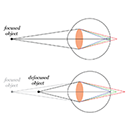

Research
Here are a few selected publications/presentations that highlight some of my research interests in perception. For a more complete listing of recent work, please visit my
Publications page.
Pictorial and ocular cues to depth
ChromaBlur: Rendering chromatic eye aberration improves accommodation and realism
AbstractLinkComputer-graphics engineers and vision scientists want to generate images that reproduce realistic depth-dependent blur. Current rendering algorithms take into account scene geometry, aperture size, and focal distance, and they produce photorealistic imagery as with a high-quality camera. But to create immersive experiences, rendering algorithms should aim instead for perceptual realism. In so doing, they should take into account the significant optical aberrations of the human eye. We developed a method that, by incorporating some of those aberrations, yields displayed images that produce retinal images much closer to the ones that occur in natural viewing. In particular, we create displayed images taking the eye's chromatic aberration into account. This produces different chromatic effects in the retinal image for objects farther or nearer than current focus. We call the method ChromaBlur. We conducted two experiments that illustrate the benefits of ChromaBlur. One showed that accommodation (eye focusing) is driven quite effectively when ChromaBlur is used and that accommodation is not driven at all when conventional methods are used. The second showed that perceived depth and realism are greater with imagery created by ChromaBlur than in imagery created conventionally. ChromaBlur can be coupled with focus-adjustable lenses and gaze tracking to reproduce the natural relationship between accommodation and blur in HMDs and other immersive devices. It may thereby minimize the adverse effects of vergence-accommodation conflicts.
Varifocal virtuality: a novel optical layout for near-eye display
Kaan Akşit, Ward Lopes, Jonghyun Kim, Josef Spjut, Anjul Patney, Peter Shirley, David Luebke, Steven A. Cholewiak, Pratul Srinivasan, Ren Ng, Martin S. Banks, & Gordon D. Love (2017).
Varifocal virtuality: a novel optical layout for near-eye display. In
ACM SIGGRAPH 2017 Emerging Technologies, (pp. 25). doi: 10.1145/3084822.3084829
Augmented reality (AR) is gaining momentum, with multiple commercial see-through near-eye displays arriving such as the Meta 2 and the Microsoft Hololens. These devices are a big step toward Ivan Sutherland's original vision of an "ultimate display", but many limitations remain. Existing displays struggle to achieve a wide field of view (FOV) with compact optics. Such displays also suffer from the vergence-accommodation conflict: they present synthetic images at a constant optical distance, requiring a fixed focus from the eye's accommodation mechanism, while the vergence of the two eyes working in concert places the synthetic object(s) at a distance other than the accommodation distance. This project employs a novel wide-FOV optical design that can adjust the focus depth dynamically, tracking the user's binocular gaze and matching the focus to the vergence. Thus the display is always "in focus" for whatever object the user is looking at, solving the vergence-accommodation conflict. Objects at a different distance, which should not be in focus, are rendered with a sophisticated simulated defocus blur that accounts for the internal optics of the eye.

ChromaBlur: Rendering chromatic eye aberration improves accommodation and realism in HMDs
AbstractLinkWe developed a rendering method that takes into account the eye's chromatic aberration. Accommodation is driven much more accurately with this method than with conventional methods. Perceived realism is also improved.
3D shape perception
Distinguishing between texture and shading flows for 3D shape estimation
Steven A. Cholewiak, Romain Vergne, Benjamin Kunsberg, Steven W. Zucker, & Roland W. Fleming (2015). Distinguishing between texture and shading flows for 3D shape estimation. Presented at Visual Sciences Society (VSS) Annual Meeting, St. Pete Beach, FL, USA.
AbstractThe visual system can infer 3D shape from orientation flows arising from both texture and shading patterns. However, these two types of flows provide fundamentally different information about surface structure. Texture flows, when derived from distinct elements, mainly signal first-order features (surface slant), whereas shading flow orientations primarily relate to second-order surface properties. It is therefore crucial for the brain to identify whether flow patterns originate from shading or texture to correctly infer shape. One possible approach would be to use 'surface appearance' (e.g. smooth gradients vs. fine-scale texture) to distinguish texture from shading. However, the structure of the flow fields themselves may indicate whether a given flow is more likely due to first- or second-order shape information. Here we test these two possibilities. We generated irregular objects ('blobs') using sinusoidal perturbations of spheres. We then derived two new objects from each blob: One whose shading flow matched the original object's texture flow, and another whose texture flow matched the original's shading flow. Using high and low frequency environment maps to render the surfaces, we were able to manipulate surface appearance independently from the flow structure. This provided a critical test of how appearance interacts with orientation flow when estimating 3D shape and revealed some striking illusions of shape. In an adjustment task, observers matched the perceived shape of a standard object to each comparison object by morphing between the generated shape surfaces. In a 2AFC task, observers were shown two manipulations for each blob and indicated which one matched a briefly flashed standard. Performance was compared to an orientation flow based model and confirmed that observers' judgments agreed with texture and shading flow predictions. Both the structure of the flow and overall appearance are important for shape perception, but appearance cues determine the inferred source of the observed flowfield.
Appearance controls interpretation of orientation flows for 3D shape estimation
Steven A. Cholewiak, Romain Vergne, Benjamin Kunsberg, Steven W. Zucker, & Roland W. Fleming (2015). Appearance controls interpretation of orientation flows for 3D shape estimation. Presented at Computational and Mathematical Models in Vision (MODVIS) Annual Meeting, St. Pete Beach, FL, USA.
AbstractThe visual system can infer 3D shape from orientation flows arising from both texture and shading patterns. However, these two types of flows provide fundamentally different information about surface structure. Texture flows, when derived from distinct elements, mainly signal first-order features (surface slant), whereas shading flow orientations primarily relate to second-order surface properties (the change in surface slant). The source of an image's structure is inherently ambiguous, it is therefore crucial for the brain to identify whether flow patterns originate from texture or shading to correctly infer shape from a 2D image. One possible approach would be to use 'surface appearance' (e.g. smooth gradients vs. fine-scale texture) to distinguish texture from shading. However, the structure of the flow fields themselves may indicate whether a given flow is more likely due to first- or second-order shape information. We test these two possibilities in this set of experiments, looking at speeded and free responses.
Predicting 3D shape perception from shading and texture flows
Cholewiak, Steven A., Kunsberg, Benjamin, Zucker, Steven W., & Fleming, Roland W. (2014).
Predicting 3D shape perception from shading and texture flows. Presented at Visual Sciences Society (VSS) Annual Meeting, St. Pete Beach, FL, USA. doi: 10.1167/14.10.1113
Perceiving 3D shape involves processing and combining different cues, including texture, shading, and specular reflections. We have previously shown that orientation flows produced by the various cues provide fundamentally different information about shape, leading to complementary strengths and weaknesses (see Cholewiak & Fleming, VSS 2013). An important consequence of this is that a given shape may appear different, depending on whether it is shaded or textured, because the different cues reveal different shape features. Here we sought to predict specific regions of interest (ROIs) within shapes where the different cues lead to better or worse shape perception. Since the predictions were derived from the orientation flows, our analysis provides a key test of how and when the visual system uses orientation flows to estimate shape. We used a gauge figure experiment to evaluate shape perception. Cues included Lambertian shading, isotropic 3D texture, both shading and texture, and pseudo-shaded depth maps. Participant performance was compared to a number of image and scene-based perceptual performance predictors. Shape from texture ROI models included theories incorporating the surface's slant and tilt, second-order partial derivatives (i.e., change in tilt direction), and tangential and normal curvatures of isotropic texture orientation. Shape from shading ROI models included image based metrics (e.g., brightness gradient change), anisotropy of the second fundamental form, and surface derivatives. The results confirm that individually texture and shading are not diagnostic of object shape for all locations, but local performance correlates well with ROIs predicted by first and second-order properties of shape. The perceptual ROIs for texture and shading were well predicted via the mathematical models. In regions that were ROI for both cues, shading and texture performed complementary functions, suggesting that a common front-end based on orientation flows can predict both strengths and weaknesses of different cues at a local scale.
Limits on the estimation of shape from specular surfaces
Mazzarella, Julia E., Cholewiak, Steven A., Phillips, Flip, & Fleming, Roland W. (2014).
Limits on the estimation of shape from specular surfaces. Presented at Visual Sciences Society (VSS) Annual Meeting, St. Pete Beach, FL, USA. doi: 10.1167/14.10.721
Humans are generally remarkably good at inferring 3D shape from distorted patterns of reflections on mirror-like objects (Fleming et al, 2004). However, there are conditions in which shape perception fails (complex planar reliefs under certain illuminations; Faisman and Langer, 2013). A good theory of shape perception should predict failures as well as successes of shape perception, so here we sought to map out systematically the conditions under which subjects fail to estimate shape from specular reflections and to understand why. To do this, we parametrically varied the spatial complexity (spatial frequency content) of both 3D relief and illumination, and measured under which conditions subjects could and could not infer shape. Specifically, we simulated surface reliefs with varying spatial frequency content and rendered them as perfect mirrors under spherical harmonic light probes with varying frequency content. Participants viewed the mirror-like surfaces and performed a depth-discrimination task. On each trial, the participants' task was to indicate which of two locations on the surface---selected randomly from a range of relative depth differences on the object's surface---was higher in depth. We mapped out performance as a function of both the relief and the lighting parameters. Results show that while participants were accurate within a given range for each manipulation, there also existed a range of spatial frequencies -- namely very high and low frequencies -- where participants could not estimate surface shape. Congruent with previous research, people were able to readily determine 3D shape using the information provided by specular reflections; however, performance was highly dependent upon surface and environment complexities. Image analysis reveals the specific conditions that subjects rely on to perform the task, explaining the pattern of errors.
Towards a unified explanation of shape from shading and texture
AbstractLinkThe estimation of 3D shape from 2D images requires processing and combining many cues, including texture, shading, specular highlights and reflections. Previous research has shown that oriented filter responses ('orientation fields') may be used to perceptually reconstruct the surface structure of textured and shaded 3D objects. However, texture and shading provide fundamentally different information about 3D shape -- texture provides information about surface orientations (which depend on the first derivative of the surface depth) while shading provides information about surface curvatures (which depend on higher derivatives). In this research project, we used specific geometric transformations that preserve the informativeness of one cue's orientation fields while disturbing the other cue's orientation fields to investigate whether oriented filter responses predict the observed strengths and weaknesses of texture and shading cues for 3D shape perception. In the first experiment, a 3D object was matched to two comparison objects, one with identical geometry and another with a subtly different pattern of surface curvatures. This transformation alters second derivatives of the surface while preserving first derivatives, so changes in the orientation fields predict higher detectability for shaded objects. This was reflected in participants' judgments and model performance. In the second experiment, observers matched the perceived shear of two objects. This transformation alters first derivatives but preserves second derivatives. Therefore, changes in the orientation fields predicted a stronger effect on the perceived shape for textured objects, which was reflected in participant and model performance. These results support a common front-end -- based on orientation fields -- that accounts for the complementary strengths and weaknesses of texture and shading cues. Neither cue is fully diagnostic of object shape under all circumstances, and neither cue is 'better' than the other in all situations. Instead, the model provides a unified account of the conditions in which cues succeed and fail.
Naive physics
Perception of physical stability and center of mass of 3D objects
AbstractLinkHumans can judge from vision alone whether an object is physically stable or not. Such judgments allow observers to predict the physical behavior of objects, and hence to guide their motor actions. We investigated the visual estimation of physical stability of 3-D objects (shown in stereoscopically viewed rendered scenes) and how it relates to visual estimates of their center of mass (COM). In Experiment 1, observers viewed an object near the edge of a table and adjusted its tilt to the perceived critical angle, i.e., the tilt angle at which the object was seen as equally likely to fall or return to its upright stable position. In Experiment 2, observers visually localized the COM of the same set of objects. In both experiments, observers' settings were compared to physical predictions based on the objects' geometry. In both tasks, deviations from physical predictions were, on average, relatively small. More detailed analyses of individual observers' settings in the two tasks, however, revealed mutual inconsistencies between observers' critical-angle and COM settings. The results suggest that observers did not use their COM estimates in a physically correct manner when making visual judgments of physical stability.
Visual perception of the physical stability of asymmetric three-dimensional objects
AbstractLinkVisual estimation of object stability is an ecologically important judgment that allows observers to predict the physical behavior of objects. A natural method that has been used in previous work to measure perceived object stability is the estimation of perceived "critical angle"---the angle at which an object appears equally likely to fall over versus return to its upright stable position. For an asymmetric object, however, the critical angle is not a single value, but varies with the direction in which the object is tilted. The current study addressed two questions: (a) Can observers reliably track the change in critical angle as a function of tilt direction? (b) How do they visually estimate the overall stability of an object, given the different critical angles in various directions? To address these questions, we employed two experimental tasks using simple asymmetric 3D objects (skewed conical frustums): settings of critical angle in different directions relative to the intrinsic skew of the 3D object (Experiment 1), and stability matching across 3D objects with different shapes (Experiments 2 and 3). Our results showed that (a) observers can perceptually track the varying critical angle in different directions quite well; and (b) their estimates of overall object stability are strongly biased toward the minimum critical angle (i.e., the critical angle in the least stable direction). Moreover, the fact that observers can reliably match perceived object stability across 3D objects with different shapes suggests that perceived stability is likely to be represented along a single dimension.
The tipping point: Visual estimation of the physical stability of three-dimensional objects
Cholewiak, Steven A. (2012). The tipping point: Visual estimation of the physical stability of three-dimensional objects (Doctoral dissertation).
AbstractVision research generally focuses on the currently visible surface properties of objects, such as color, texture, luminance, orientation, and shape. In addition, however, observers can also visually predict the physical behavior of objects, which often requires inferring the action of hidden forces, such as gravity and support relations. One of the main conclusions from the naive physics literature is that people often have inaccurate physical intuitions; however, more recent research has shown that with dynamic simulated displays, observers can correctly infer physical forces (e.g., timing hand movements to catch a falling ball correctly takes into account Newton's laws of motion). One ecologically important judgment about physical objects is whether they are physically stable or not. This research project examines how people perceive physical stability and addresses (1) How do visual estimates of stability compare to physical predictions? Can observers track the influence of specific shape manipulations on object stability? (2) Can observers match stability across objects with different shapes? How is the overall stability of an object estimated? (3) Are visual estimates of object stability subject to adaptation effects? Is stability a perceptual variable? The experimental findings indicate that: (1) Observers are able to judge the stability of objects quite well and are close to the physical predictions on average. They can track how changing a shape will affect the physical stability; however, the perceptual influence is slightly smaller than physically predicted. (2) Observers can match the stabilities of objects with different three-dimensional shapes -- suggesting that object stability is a unitary dimension -- and their judgments of overall stability are strongly biased towards the minimum critical angle. (3) The majority of observers exhibited a stability adaptation aftereffect, providing evidence in support of the claim that stability may be a perceptual variable.
Haptics
Discrimination of real and virtual surfaces with sinusoidal and triangular gratings using the fingertip and stylus
Kocsis, Matthew B., Cholewiak, Steven A., Traylor, Ryan M., Adelstein, Bernard D., Hirleman, E. Daniel, & Tan, Hong Z. (2013).
Discrimination of real and virtual surfaces with sinusoidal and triangular gratings using the fingertip and stylus.
IEEE Transactions on Haptics, 6(2), 181-192. doi: 10.1109/TOH.2012.31
Two-interval two-alternative forced-choice discrimination experiments were conducted separately for sinusoidal and triangular textured surface gratings from which amplitude (i.e., height) discrimination thresholds were estimated. Participants (group sizes: n = 4 to 7) explored one of these texture types either by fingertip on real gratings (Finger real), by stylus on real gratings (Stylus real), or by stylus on virtual gratings (Stylus virtual). The real gratings were fabricated from stainless steel by an electrical discharge machining process while the virtual gratings were rendered via a programmable force-feedback device. All gratings had a 2.5-mm spatial period. On each trial, participants compared test gratings with 55, 60, 65, or 70 μm amplitudes against a 50-μm reference. The results indicate that discrimination thresholds did not differ significantly between sinusoidal and triangular gratings. With sinusoidal and triangular data combined, the average (mean + standard error) for the Stylus-real threshold (2.5 +- 0.2 μm) was significantly smaller (p < 0.01) than that for the Stylus-virtual condition (4.9 +- 0.2 μm). Differences between the Finger-real threshold (3.8 +- 0.2 μm) and those from the other two conditions were not statistically significant. Further studies are needed to better understand the differences in perceptual cues resulting from interactions with real and virtual gratings.
A frequency-domain analysis of haptic gratings
AbstractLinkThe detectability and discriminability of virtual haptic gratings were analyzed in the frequency domain. Detection (Exp. 1) and discrimination (Exp. 2) thresholds for virtual haptic gratings were estimated using a force-feedback device that simulated sinusoidal and square-wave gratings with spatial periods from 0.2 to 38.4 mm. The detection threshold results indicated that for spatial periods up to 6.4 mm (i.e., spatial frequencies >0.156 cycle/mm), the detectability of square-wave gratings could be predicted quantitatively from the detection thresholds of their corresponding fundamental components. The discrimination experiment confirmed that at higher spatial frequencies, the square-wave gratings were initially indistinguishable from the corresponding fundamental components until the third harmonics were detectable. At lower spatial frequencies, the third harmonic components of square-wave gratings had lower detection thresholds than the corresponding fundamental components. Therefore, the square-wave gratings were detectable as soon as the third harmonic components were detectable. Results from a third experiment where gratings consisting of two superimposed sinusoidal components were compared (Exp. 3) showed that people were insensitive to the relative phase between the two components. Our results have important implications for engineering applications, where complex haptic signals are transmitted at high update rates over networks with limited bandwidths.
Haptic identification of stiffness and force magnitude
Cholewiak, Steven A., Tan, Hong Z., & Ebert, David S. (2008).
Haptic identification of stiffness and force magnitude. In
Proceedings of the 2008 Symposium on Haptic Interfaces for Virtual Environment and Teleoperator Systems, (pp. 87-91). doi: 10.1109/HAPTICS.2008.4479918
As haptics becomes an integral component of scientific data visualization systems, there is a growing need to study "haptic glyphs" (building blocks for displaying information through the sense of touch) and quantify their information transmission capability. The present study investigated the channel capacity for transmitting information through stiffness or force magnitude. Specifically, we measured the number of stiffness or force- magnitude levels that can be reliably identified in an absolute identification paradigm. The range of stiffness and force magnitude used in the present study, 0.2-3.0 N/mm and 0.1-5.0 N, respectively, was typical of the parameter values encountered in most virtual reality or data visualization applications. Ten individuals participated in a stiffness identification experiment, each completing 250 trials. Subsequently, four of these individuals and six additional participants completed 250 trials in a force-magnitude identification experiment. A custom-designed 3 degrees-of-freedom force-feedback device, the ministick, was used for stimulus delivery. The results showed an average information transfer of 1.46 bits for stiffness identification, or equivalently, 2.8 correctly-identifiable stiffness levels. The average information transfer for force magnitude was 1.54 bits, or equivalently, 2.9 correctly-identifiable force magnitudes. Therefore, on average, the participants could only reliably identify 2-3 stiffness levels in the range of 0.2-3.0 N/mm, and 2-3 force- magnitude levels in the range of 0.1-5.0 N. Individual performance varied from 1 to 4 correctly-identifiable stiffness levels and 2 to 4 correctly-identifiable force-magnitude levels. Our results are consistent with reported information transfers for haptic stimuli. Based on the present study, it is recommended that 2 stiffness or force-magnitude levels (i.e., high and low) be used with haptic glyphs in a data visualization system, with an additional third level (medium) for more experienced users.
Perceptual Summary Statistics
Perceptual estimation of variance in orientation and its dependence on sample size
Cholewiak, Steven A. (2010). Perceptual estimation of variance in orientation and its dependence on sample size (Master's Thesis).
AbstractRecent research has shown that participants are very good at perceptually estimating summary statistics of sets of similar objects (e.g., Ariely, 2001; Chong & Treisman, 2003; 2005). While the research has focused on first-order statistics (e.g., the mean size of a set of discs), it is unlikely that a mental representation of the world includes only a list of mean estimates (or expected values) of various attributes. Therefore, a comprehensive theory of perceptual summary statistics would be incomplete without an investigation of the representation of second-order statistics (i.e., variance). Two experiments were conducted to test participants' ability to discriminate samples that differed in orientation variability. Discrimination thresholds and points of subjective equality for displays of oriented triangles were measured in Experiment 1. The results indicated that participants could discriminate variance without bias and that participant sensitivity (measured via relative thresholds, i.e., Weber fractions) was dependent upon sample size but not baseline variance. Experiment 2 investigated whether participants used a simpler second-order statistic, namely, sample range to discriminate dispersion in orientation. The results of Experiment 2 showed that variance was a much better predictor of performance than sample range. Taken together, the experiments suggest that variance information is part of the visual system's representation of scene variables. However, unlike the estimation of first-order statistics, the estimation of variance depends crucially on sample size.
Perceptual estimation of variance in orientation and its dependence on sample size
AbstractLinkPrevious research on statistical perception has shown that subjects are very good at perceptually estimating first-order statistical properties of sets of similar objects (such as the mean size of a set of disks). However, it is unlikely that our mental representation of the world includes only a list of mean estimates of various attributes. Work on motor and perceptual decisions, for example, suggests that observers are implicitly aware of their own motor / perceptual uncertainty, and are able to combine it with an experimenter-specified loss function in a near-optimal manner. The current study investigated the representation of variance by measuring difference thresholds for orientation variance of sets of narrow isosceles triangles with relatively large Standard Deviations (SD): 10, 20, 30 degrees; and for different sample sizes (N): 10, 20, 30 samples. Experimental displays consisted of multiple triangles whose orientations were specified by a von Mises distribution. Observers were tested in a 2IFC task in which one display had a base SD, and the other, test, display had a SD equal to +/−10, +/−30, +/−50, and +/−70% of the base SD. Observers indicated which interval had higher orientation variance. Psychometric curves were fitted to observer responses and difference thresholds were computed for the 9 conditions. The results showed that observers can estimate variance in orientation with essentially no bias. Although observers are thus clearly sensitive to variance, their sensitivity is not as high as for the mean. The relative thresholds (difference threshold SD / base SD) exhibited little dependence on base SD, but increased greatly (from ∼20% to 40%) as sample size decreased from 30 to 10. Comparing the σ of the cumulative normal fits to the standard error of SD, we found that the estimated σ's were on average about 3 times larger than the corresponding standard errors.